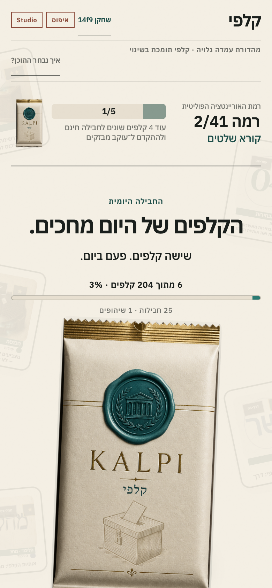
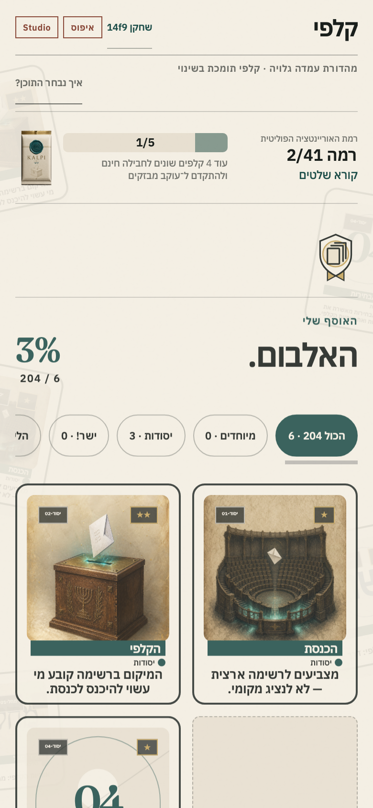
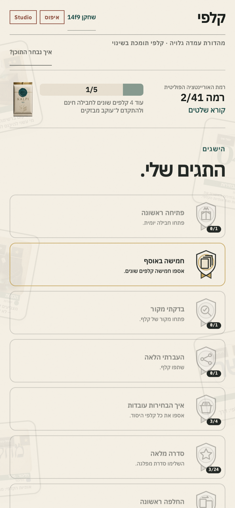
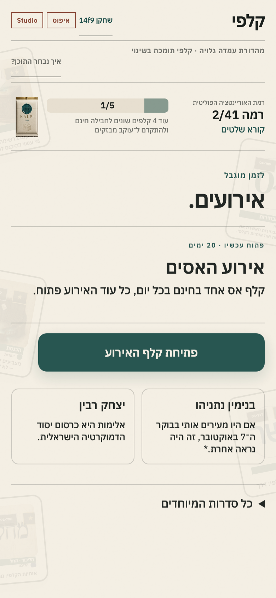
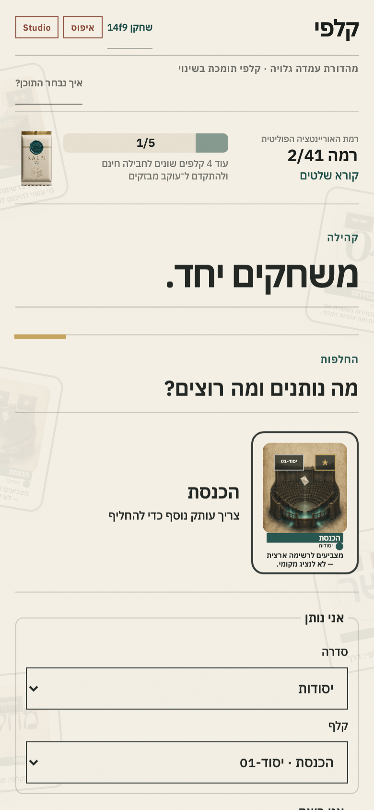

גוללים מהר, מחפשים גירוי חדש — ולא עוצרים לקרוא מצע.
הצגנו רעיון. קיבלנו שאלות קשות.
זה מה שבנינו בתגובה.
הוכחת היתכנות שאפשר לפתוח, לקרוא ולבדוק.
״בנט אח.״זו תחושה — לא היכרות עם מצע. אחי הקטן לא ידע למי להצביע. גם הדר מוכתר ביטאה את אותו חוסר ידע. מכאן נולד המוצר.
המטרה: אוריינות פוליטית ובחירה חכמה יותר.
לא חסר מידע — חסר קשב
הפוליטיקה דורשת שעה. הפיד מקבל שנייה.
רבים מגיעים לבחירות בלי היכרות בסיסית עם האנשים, המפלגות והעמדות.
תחושת ההימור והאוסף יוצרת סיבה לחזור — ואז נותנת מידע במנות קטנות.
לא נלחמים בהרגל. משתמשים בו כדי להגיש בכל פתיחה ציטוט אחד קצר שאפשר לקרוא, לזכור ולבדוק.
מסך הבית
המשחק מתקדם גם כשלא נמצאים בו.
- איסוף אוטומטי: קלף אחד בכל שלוש שעות, עד שמונה בהמתנה
- עשר דרגות: מקצב מהיר בהתחלה ועד ראש הממשלה
- היום בקְלָפִי: אתגר יומי, אירוע פעיל ומוביל באוסף
- זהות שחקן: שם אישי שממשיך לטבלאות

הריטואל
הציטוט מגיע לפני הזהות.
ציטוט←סיעה←שם←דיוקן
- אותו קלף, אותו קוד: הכרטיס מתמלא — לא מוחלף באמצע
- השרת קובע: התוצאה נשמרת לפני האנימציה
- ה־Studio שולט: תוכן ומהירות החשיפה משפיעים על המשחק
האוסף
רואים מה יש — ומה עדיין חסר.
- סדרות בעברית: סמל, מצע ופוליטיקאים באותו רצף
- מספור יציב: `מחל-01` לסמל; ביבי `מחל-04–06`
- קלף מלא בלחיצה: אותו עיצוב כמו בפתיחה וב־Studio
- שכפולים ותגים: מספר העותקים למעלה; תגים מוחשיים בראש האלבום
- מטא־דאטה חברתי: כמה שחקנים נוספים מחזיקים בקלף*

לשונית עצמאית
התקדמות שאפשר לענוד.
- תגים מוחשיים: שפה של סיכות ואמייל, לא רק מספרים
- תנאי פתיחה: קלפים שונים, שכפולים, סדרות וביקורים
- שני מקומות: פירוט מלא כאן; התגים שהושגו בראש האלבום
- הסבר בריחוף ובמגע: כל תג אומר בדיוק למה התקבל

לזמן מוגבל
משהו חדש קורה עכשיו.
- אירוע פעיל: חלון זמן ברור וסדרה זמינה עכשיו
- קלפי מיוחדים: אסים וסדרות קידום שאינם בחבילה היומית
- משיכה נשמרת: קלף האירוע נכנס לאלבום דרך השרת
- הבא בתור: הצצה לאירועים הקרובים בלי להעמיס

משחקים יחד
האוסף הופך לפעילות חברתית.
- החלפה נקייה: בוחרים קודם סדרה, אחר כך קלף
- תצוגה מלאה: אפשר להגדיל את הקלף לפני שמציעים
- מלחמת סיעות: בחירה אנונימית ופעילות שנמדדת בפועל
- טבלאות: אספנים ואתגר יומי לפי סיעה מתחלפת
- שם אישי: אותו שם מופיע בכל הטבלאות

אוריינטציה פוליטית דרך ההרגל שכבר קיים
חוטפים את לולאת הדופמין — ומאכילים אותה בציטוטים.
הציטוטים הם המוצר.החבילה, הנדירות והאוסף גורמים לפתוח. השורה המדויקת גורמת לקרוא, לזכור ולבדוק.
סקרנות←ציטוט←זהות←מקור←אוריינטציה
מתחילים בקלפי התמצאות עובדתיים; הטיעון הערכי מתחדד בהמשך. העמדה גלויה כבר מהכניסה — לא מסתירים אותה עד שהשחקן בפנים.
שלושה סיכונים שיכלו לשבור את הרעיון.
דיוק, הקשר, זכויות ושיקול דעת אינם עבודה של סוכן בלבד.
לולאת שיתוף לא עוזרת לפני שיש קבוצה ראשונה אמינה.
עיצוב נכון, חשיפה חדה וחוויית מובייל הם המוצר.
195
קלפים שחיקים, 14 מפלגות ו־51 פוליטיקאים בהוכחת ההיתכנות המורחבת.
אוטומציה מכינה. אדם מפרסם.
- הסוכן: מבנה, שדות חסרים, כפילויות, תצוגה ובדיקות
- העורך: ציטוט, הקשר, בחירה, שיקול פוליטי וזכויות
טיוטהבנוי, עדיין לא לפרסום
נבדק עובדתיתניסוח ומקור אומתו
מאושרשער פרסום אנושי
ניסוי מדיד — לא ״נהיה ויראליים״.
יוצרים ראשונים עם קהל רלוונטי לגילי 18–24
פורמטים: חשיפה קצרה, תמונת WhatsApp וניחוש הציטוט
חלון פתיחה מתואם של 60–90 דקות
חבילה←קריאה←מקור←שיתוף←הפניה←שחקן חדש
יעדי למידה מתוכננים. לא טענה לתוצאות קיימות.
ערך אמיתי בלי מחיר כניסה
עוד סיבה להיכנס לדקה ביום.
תחרות ברורה שמתגמלת התמדה ומהירות. דורשת מניעת בוטים וכללי שוויון.
הסיכוי של שחקן = מספר הקלפים השונים שלו חלקי סך הקלפים השונים של כולם.
תקנון, גיל, מס, פרטיות, מניעת ניצול ותקציב פרס. כניסה חינם אינה מבטלת בדיקה משפטית.
ניסוי רכישה עתידי — לא מכניקה קיימת ולא הבטחת פרס.
השורה לפני השם
קלף אחד. חשיפה אחת. בכל המשחק.
- הציטוט מופיע לפני הזהות — ואז נשאר על הקלף
- אותו קוד מציג את הקלף בחבילה, באלבום וב־Studio
- נייר, דיו וזהב; צבע המפלגה נשאר נקודה קטנה
- נדירות משנה את הטקס — לעולם לא את האמת
האם עשרה יוצרים יכולים לגרום לאנשים לפתוח, לקרוא, לבדוק ולשתף?
קישורים ישירים לשרשראות הציטוטים המרכזיות.
שחקנים צעירים, על הטלפונים שלהם, מולנו.
קבוצת התנעה ובדיקה אנושית של דמויות ואמנות.